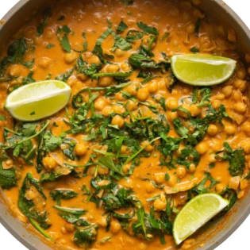

Back

Chickpea and Spinach curry
A protein-packed, creamy curry perfect for weeknight dinners.
Ingredients
1 tablespoon coconut oil
1 onion, diced
2 cloves garlic, minced
1 inch ginger, grated
1 tablespoon curry powder
1 can chickpeas, drained and rinsed
1 can coconut milk
1 cup fresh spinach leaves
Salt and pepper, to taste
Fresh cilantro, for garnish
Cooked rice, for serving
Instructions
In a large skillet, heat coconut oil over medium heat. Sauté the onion, garlic, and ginger until soft.
Stir in the curry powder and cook for 1 minute until fragrant.
Add the chickpeas and coconut milk. Bring to a simmer and cook for 10 minutes.
Stir in the spinach until wilted. Season with salt and pepper.
Serve hot over rice, garnished with fresh cilantro.